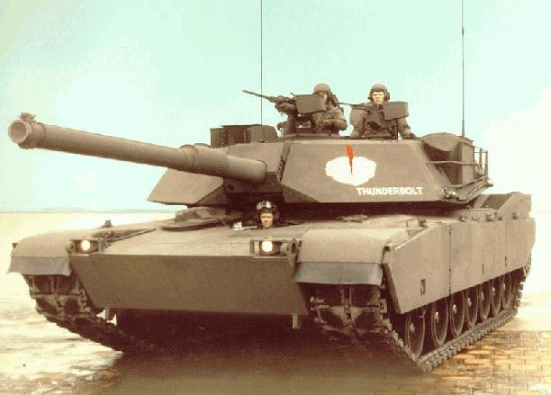

M1 Abrams
Producent: Stany Zjednoczone
Produkowany od: 1980 r.; obecnie wersja A2 (od 2020 planowana A3)
Abrams do służby wszedł w latach 80. XX wieku, zastępując leciwego już wtedy M60. Od tego czasu M1 walczyły między innymi w Zatoce Perskiej, w Bośni, Afganistanie i Iraku, za każdym razem dobrze sprawdzając się w boju i będąc niezastąpionym wsparciem piechoty. W 2016 roku Abrams pozostaje podstawowym czołgiem używanym prze US Army i Marines, a także armii Egiptu, Kuwejtu, Iraku, Arabii Saudyjskiej i Australii.


Ostatnia aktualizacja: 17.11.2019